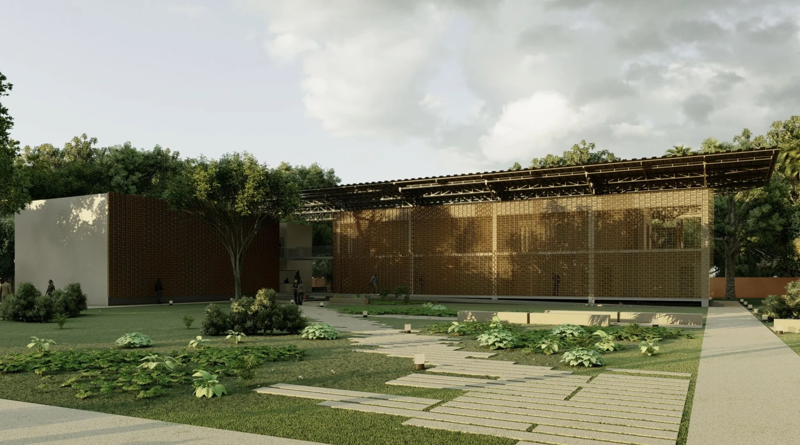
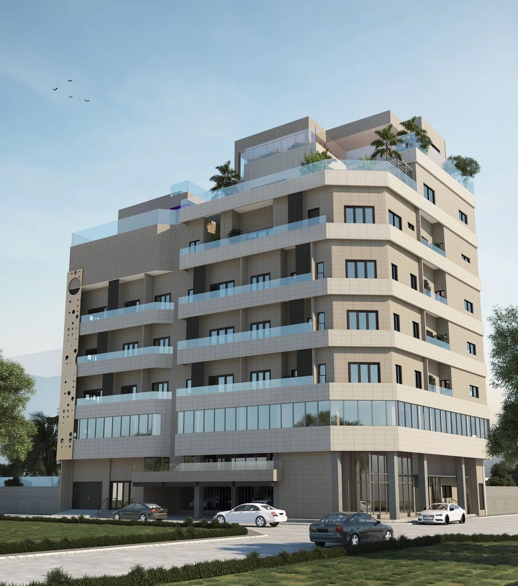
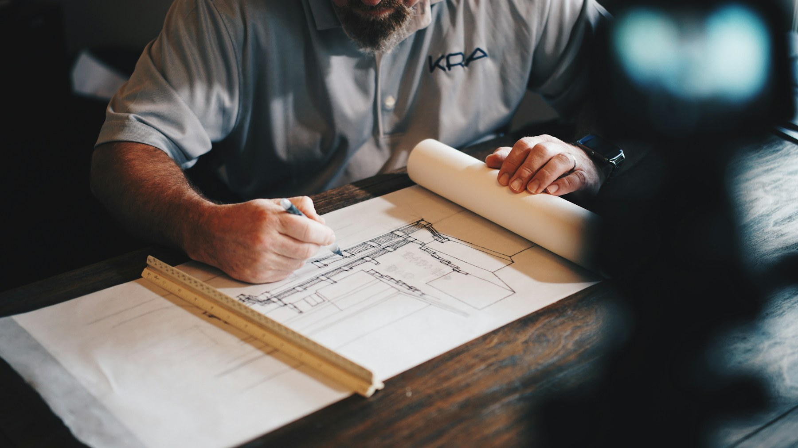
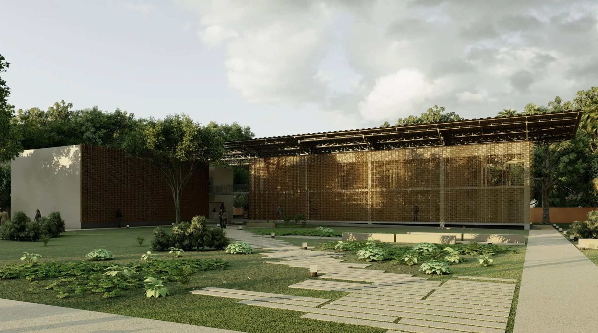
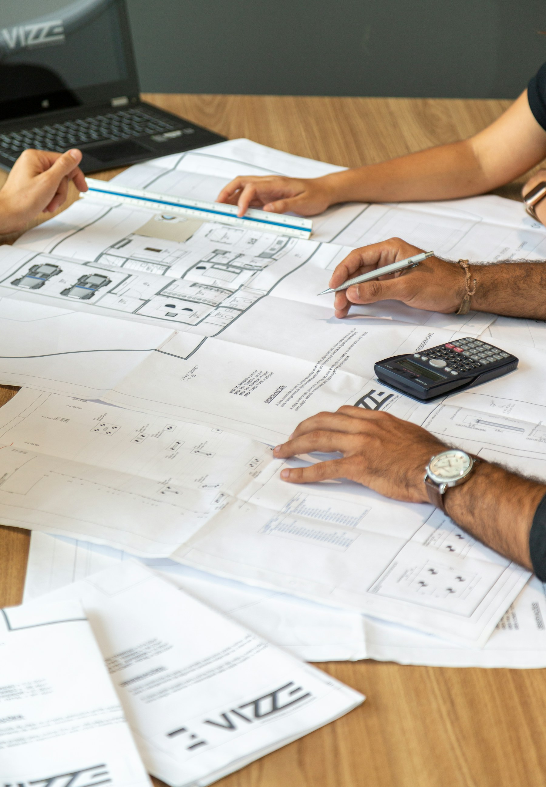
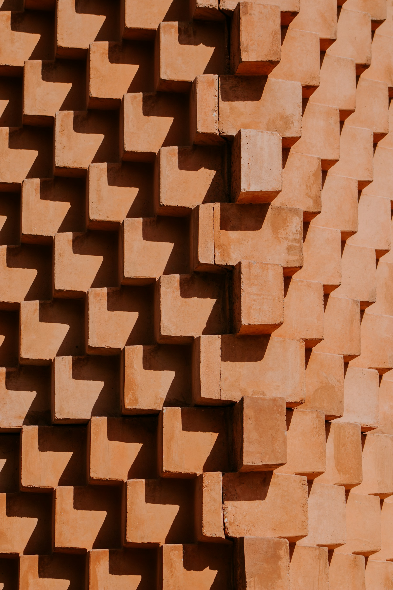
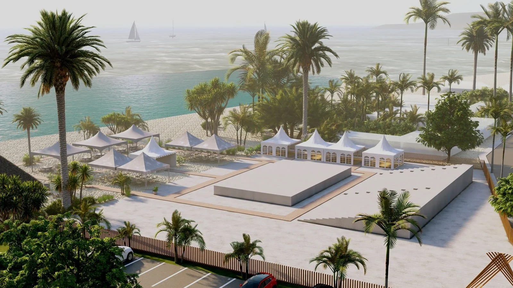

Accueil / Expertises
ExpertisesConstruction, AMO et immobilier en Afrique de l'Ouest
Built Assets est votre partenaire unique pour sécuriser et réaliser vos projets de construction et immobiliers au Togo et en Afrique de l'Ouest.
Forts de notre approche intégrée, nous combinons la rigueur de l'Assistance à Maîtrise d'Ouvrage (AMO), la créativité de la Conception architecturale et l'excellence dans l'exécution des travaux (Construction). Que vous soyez un investisseur local, de la Diaspora ou une institution, nos équipes vous guident vers la performance, la durabilité (EDGE) et le succès de votre patrimoine.

Assistance à maîtrise d'ouvrage
Sécurisez votre investissement et vos délais grâce à notre supervision complète.

Conception
Architecture sur mesure, coordination technique et ingénierie de la valeur.

Conception-construction
La solution guichet unique pour une livraison accélérée et une responsabilité centralisée.
Immobilier
Conseils stratégiques et développement pour la valorisation de votre patrimoine foncier.
Solutions durables et certification EDGE
Conception de bâtiments écoénergétiques et respectueux de l'environnement.

Permis de construire au Togo
Gestion et obtention de vos autorisations administratives au Togo.

Mobilier sur mesure
Des mobiliers design et robustes, réalisés à partir de matériaux disponibles localement.

Construisons ensemble le projet de vos ambitions.
Nos équipes sont à votre écoute pour répondre à vos questions et vous accompagner dans la réalisation de vos projets.